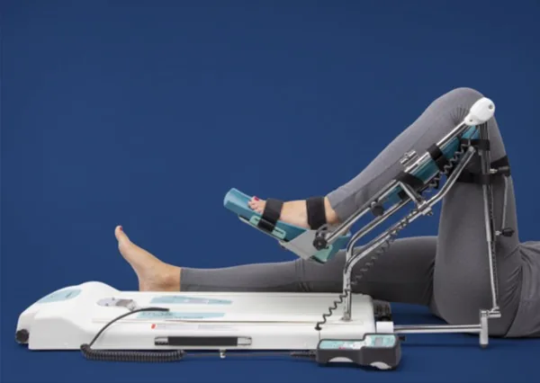

Kinetek za koljeno
Kinetek (CPM) aparat za koljeno omogućuje sigurnu i učinkovitu rehabilitaciju nakon operacije. Pasivnim razgibavanjem koljena ubrzava oporavak, smanjuje bol i sprječava ukočenost zgloba. Terapija se provodi kod kuće, bez odlaska u ordinaciju.
NAZOVI ZA NAJAM
Zašto koristiti Kinetek za koljeno?
Koljeno je jedan od najsloženijih zglobova u ljudskom tijelu. Nakon operacije, pravilna rehabilitacija ključna je za potpuni oporavak pokretljivosti. Kinetek aparat koristi tehnologiju kontinuiranog pasivnog razgibavanja (CPM) koja nježno savija i ispruža koljeno bez aktivnog napora pacijenta.
CPM terapija za koljeno medicinski je dokazana metoda koja sprječava stvaranje priraslica, smanjuje postoperativni otok i ubrzava povratak punog raspona pokreta. Posebno je učinkovita u prvim tjednima nakon operacije, kada mišići još nisu spremni za aktivno opterećenje.
Redovitom primjenom Kineteka pacijenti postižu puni raspon pokreta koljena znatno brže nego oni koji se oslanjaju isključivo na aktivne vježbe. Kut savijanja i brzina pokreta prilagođavaju se stanju pacijenta, a terapija se provodi u udobnosti vlastitog doma.
Za više informacija o CPM terapiji posjetite stranicu Fizikalna terapija, terapija pasivnim razgibavanjem.
Nakon kojih operacija koljena se koristi Kinetek?
Ugradnja proteze koljena
Totalna ili parcijalna endoproteza koljena. Kinetek pomaže u vraćanju raspona pokreta i sprječava ukočenost nakon zahvata.
Preporučeno trajanje: 4-6 tjedanaRekonstrukcija ACL/PCL
Rekonstrukcija prednjeg ili stražnjeg križnog ligamenta. CPM terapija ubrzava cijeljenje presatka i smanjuje bol.
Preporučeno trajanje: 3-6 tjedanaOperacija meniskusa
Artroskopski zahvat na meniskusu koljena. Kinetek pomaže u brzom vraćanju pokretljivosti i smanjenju otoka.
Preporučeno trajanje: 2-4 tjednaPrijelom koljena
Rehabilitacija nakon prijeloma u području zgloba koljena. Pasivno razgibavanje sprječava kontrakture i ubrzava oporavak.
Preporučeno trajanje: 4-8 tjedanaPrednosti Kineteka za koljeno
Brži oporavak
Redovitom CPM terapijom puni raspon pokreta koljena postiže se znatno brže nego samo aktivnim vježbama. Skraćuje se ukupno vrijeme rehabilitacije.
Manje boli
Nježni, kontrolirani pokreti smanjuju postoperativnu bol i otok. Kinetek potiče odvodnju tekućine iz tkiva i smanjuje upalni odgovor.
Bez ukočenosti
Kontinuirano razgibavanje sprječava stvaranje priraslica i fibroznog tkiva koji ograničavaju pokretljivost koljena nakon operacije.
Bolja cirkulacija
Pasivni pokret potiče protok krvi kroz operirano područje, smanjuje rizik od tromboze i ubrzava cijeljenje tkiva.
Terapija kod kuće
Kinetek aparat koristite u udobnosti vlastitog doma, bez odlaska u ordinaciju. Dostavljamo uređaj na vašu adresu u cijeloj Hrvatskoj.
Prilagodljiv
Kut savijanja, brzina pokreta i trajanje terapije prilagođavaju se vašem stanju i napretku. Potpuna kontrola putem ručnog upravljača.
Kinetek za koljeno, cijena najma
Za kraći period rehabilitacije ili probu aparata. Minimalni period najma je 10 dana.
REZERVIRAJNajpopularnija opcija za rehabilitaciju koljena. Cijena ovisi o modelu i starosti uređaja.
REZERVIRAJZa produženi oporavak ili medicinske ustanove. Kontaktirajte nas za individualnu ponudu.
KONTAKTIRAJSve opcije uključuju dostavu, upute, podršku fizioterapeuta i servis. Detaljan cjenik pogledajte na stranici Kinetek cijena.
Započnite rehabilitaciju koljena već danas
Javite nam se i rezervirajte Kinetek aparat za koljeno. Brza dostava na kućnu adresu, stručna podrška i bez skrivenih troškova.
Javite nam se na WhatsApp